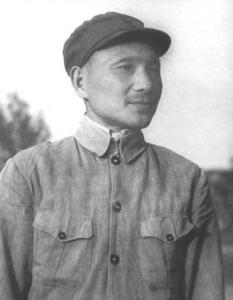

DengXiaoping

Deng Xiaoping (August 22, 1904-February 19, 1997) was born in Guang 'an, Sichuan Province. His original name was Deng Xiansheng. Later, his first teacher changed his name to Deng Xixian. He was the core leader of the second generation leadership of the Communist Party of China. He was a Marxist, proletarian revolutionist, politician, strategist and diplomat. He was also one of the main leaders of the Chinese People's Liberation Army and the People's Republic of China.
Deng Xiaoping is the chief designer of China's socialist reform, opening up and modernization. he founded Deng Xiaoping theory and is called the "chief designer" of China's reform, opening up and modernization. The policy concepts of "reform and opening up" and "one country, two systems" advocated by him have changed China in the late 20th century and also affected the world. Therefore, he was twice elected Time magazine's "Person of the Year" in 1978 and 1985.
Life of a character
 Early experience
Early experience
On August 22, 1904, he was born in Paifang Village, Xiexing Township, Guang 'an County, Sichuan Province, and was named Deng Xiansheng.
In 1909, he entered a private school and studied, with a scientific name of Deng Xixian.
in 1910, he entered xiexing township primary school to study.
in 1915, he entered guang' an county higher primary school to study.
in 1918, he entered Guangan county high school to study.
on may 4, 1919, the anti-imperialist patriotic movement of students broke out in Beijing.
in the autumn of 1919, he was admitted to Chongqing work-study program preparatory school for studying in France.
in October 1920, he arrived in France and soon studied at baye men's high school in Normandy.
in April 1921, he worked as a steel rolling worker at schneider iron and steel works in kluso city. At the end of the month, I quit my job and went to Paris. In late July, the Communist Party of China was established. In October, he went to work in Xiangbrown factory and was fired two weeks later.

In February 1922, he entered Haakinson Rubber Factory to work. In the summer of 1922, he joined the Chinese Young Communist Party in Europe (renamed the Chinese Communist Youth League in Europe the following year, also known as the European Branch of the Chinese Socialist Youth League).
in the summer of 1923, he joined the communist youth league branch in Europe and began his career as a professional revolutionary.
in 1924, he took part in the editing work of red light, an organ publication of the communist youth league in Europe. In July, he was elected as a member of the Executive Committee of the Communist Youth League in Europe and became a member of the Communist Party of China.
in the spring of 1925, he was appointed special correspondent of Lyon, the European branch of the communist party of China. From June to September, they participated in organizing many large-scale demonstrations and rallies held by Chinese tourists in France in support of the May 30 anti-imperialist movement in China. In November, he joined Renault Automobile Factory as a fitter.
on January 17, 1926, Deng Xiaoping first set foot on Russian territory and reported to Moscow oriental university under the leadership of representatives of the Moscow branch of the communist party of China. After only 12 days at the communist university of oriental laborers, Deng Xiaoping was transferred to Zhongshan university in Moscow and assigned to class 7.
agrarian revolution In the spring of 1927, he returned from the Soviet Union and was dispatched by the Chinese Communist Party to work in Xi 'an Zhongshan Military School, affiliated to Feng Yuxiang's national coalition. He was the director of political affairs and secretary of the school's Communist Party organization.
after the first Kuomintang-communist cooperation broke down, Deng Xiaoping was renamed and attended the emergency meeting of the CPC central Committee in Wuhan on August 7. At the end of the year, he moved to Shanghai with the central government.
served as secretary general of the CPC central Committee from 1928 to 1929.
In early 1928, he married Zhang Xiyuan.
In the summer of 1929, as a representative of the central government, he went to Guangxi to lead the uprising under the pseudonym of Deng Bin. Together with Zhang Yunyi, he launched the the baise uprising and Longzhou uprisings in December and February of the following year. He founded the 7th, 8th and Zuojiang and Youjiang revolutionary bases of the Chinese Workers' and Peasants' Red Army and served as the political commissar of the 7th, 8th and former enemy committees.

In the summer of 1931, he went to the Jiangxi central base area and served successively as party secretary of ruijin, party secretary of Huichang center and propaganda minister of Jiangxi provincial party Committee.
in may 1933, hit by the "left" line, he was dismissed from his post and punished by the party's "last serious warning" and became an inspector in nan village of le' an county. Soon, transferred to the red army general political department secretary general. In August, he edited the Red Star newspaper sponsored by the General Political Department of the Red Army.
in October 1934, along with the central red army long March. At the end of the year, he was appointed Secretary General of the CPC Central Committee.
in January 1935, he attended the enlarged meeting of the political bureau of the CPC central Committee held in Zunyi, Guizhou. The meeting established the correct leadership of the new central government represented by Mao Zedong. In June, he was transferred to the propaganda department of the political department of the first red army corps. In October, the central red army arrived in northern Shaanxi on the long March.
in may 1936, he was appointed deputy director and later director of the political department of the first red army corps.
anti-Japanese warafter the outbreak of the anti-Japanese war, he was appointed deputy director of the eighth route army political department of the national revolutionary army.
in January 1938, he served as a political commissar of the 129th division of the eighth route army and, together with his commander Liu bocheng, opened up anti-Japanese base areas in the Shanxi-Hebei-Henan border region in the Taihang mountains. From September to November, he participated in the Sixth Plenary Session of the enlarged Sixth Central Committee of the Communist Party of China held in Yan 'an. The plenum decided to continuously consolidate and expand the anti-Japanese national united front and reaffirmed the party's policy of independently and freely organizing the people's armed struggle against Japan. Make a report on local work at the meeting.
on July 3, 1939, he attended the enlarged meeting of the political bureau of the CPC central Committee held in Yan' an. In September, he married Zhuo Lin and returned to Taihang Mountain together.
from August to December 1940, he participated in directing the hundred regiments war. The Hundred Regimes War was the largest and strategic offensive against Japanese troops launched by the Eighth Route Army in North China.

On April 15, 1941, "The Party and the Anti-Japanese Democratic Regime" was published, setting forth the basic theory and policy of the Chinese Communist Party on the establishment of an anti-japanese democratic regime.
in September 1942, he was concurrently secretary of Taihang branch of the northern bureau of the CPC central Committee.
on October 6, 1943, the northern bureau of the central Committee of the communist party of China and the Taihang sub-bureau merged to act as the secretary of the northern bureau of the central Committee of the communist party of China and preside over the headquarters of the eighth route army. under difficult conditions, they took on the overall task of leading the party, government and army in the anti-Japanese base areas behind enemy lines in north China.
was elected a member of the central Committee at the 7th national congress of the communist party of China in 1945. In August, Japan announced its surrender. At this time, the anti-Japanese base area led by Liu Bocheng has been expanded into four areas: Taihang, Taiyue, Hebei-Shandong-Henan and southern Hebei.
war of liberationduring the liberation war, he was the political commissar of the Shanxi-Hebei-Shandong-Henan field army, the central plains field army and the second field army of the Chinese people's liberation army, the secretary of the Shanxi-Hebei-Shandong-Henan central bureau, and the first secretary of the central plains bureau and the east China bureau.
from September to November 1945, he led the Shangdang and Handan campaigns together with Liu Bocheng.
in June 1946, Chiang kai-shek launched a large-scale attack on the central plains liberated areas and launched a full-scale civil war. From August to January of the following year, Liu Bocheng and Liu Bocheng successively organized and commanded the campaigns of Longhai, Dingtao, Juancheng, hua county, Ju (Ye) Jin (Tai) Yu (Xiang), etc.
in may 1947, he was appointed secretary of the central plains bureau of the CPC central Committee. On June 30, Liu Bocheng led the main force of the Shanxi-Hebei-Shandong-Henan Field Army to cross the Yellow River and launch the Southwest Shandong Campaign, which opened the prelude of the People's Liberation Army's nationwide strategic offensive. In August, with Liu Bocheng leading the main force of the field army, they leapt thousands of miles into the Dabie Mountains. During the Kuomintang army's heavy siege, it persisted in the Dabie Mountains struggle, pushed the front to the north bank of the Yangtze River and established itself in the Central Plains region.
on may 9, 1948, he was the first secretary of the central plains bureau of the CPC central Committee, the central plains military region and the political commissar of the central plains field army. In May, they launched the Wandong Campaign with Liu Bocheng. In July, the Xiangfan Campaign was launched with Liu Bocheng. From September to January of the following year, the People's Liberation Army conducted Liaoshen, Huaihai and Pingjin campaigns, destroying the main military forces on which Chiang Kai-shek maintained his reactionary rule. On November 16, the Central Military Commission of the Communist Party of China decided that Liu Bocheng, Chen Yi, Deng Xiaoping, Su Yu and Tan Zhenlin would form the General Front Committee with Deng Xiaoping as the secretary to direct the Huai Hai Campaign. The Huai Hai Campaign wiped out 550,000 Kuomintang troops.
on February 5, 1949, the central plains field army was reorganized into the second field army, serving as a political commissar. In March, he attended the Second Plenary Session of the Seventh Central Committee of the Communist Party of China and became the first secretary of the East China Bureau of the CPC Central Committee. On March 31, he drafted the "Beijing-Shanghai-Hangzhou Campaign Implementation Outline" for the General Front Committee. From April to May, he and Liu Bocheng and Chen Yi commanded the battle of crossing the Yangtze River to liberate Nanjing, Shanghai, Jiangsu, Anhui, Zhejiang, Jiangxi and Fujian provinces.
the early days of the people's Republic of Chinaon September 30, 1949, he was elected a member of the central people's government at the first plenary session of the Chinese people's political consultative conference. On October 1, he attended the meeting in founding ceremony, People's Republic of China. On October 19, at the third meeting of the Central People's Government Committee, he was appointed a member of the Chinese People's Revolutionary Military Commission. From October to December, Liu Bocheng and other leaders marched into the southwest to liberate Sichuan, Kang, Dian and Qian provinces. On November 23, he became the first secretary of the Southwest Bureau of the CPC Central Committee. On December 2, he was appointed vice-chairman of the Southwest Military and Political Commission.
on February 22, 1950, he became a political member of the southwest military region. This year, he led the land reform, bandit suppression, political power construction, resumption and development of production in the southwest region.

In 1951, the leaders marched into Tibet to work. Peaceful liberation of Tibet.
he was transferred to the central government in July 1952 and served as deputy prime minister and deputy director of the finance and economics Committee of the central people's government's administrative Council (changed to the state Council in 1954). later, he also served as director of the transportation office of the administrative Council and minister of finance.
in April 1954, he was appointed secretary general of the CPC central Committee and minister of organization department. In September, he served as vice-premier of the State Council, vice-chairman of the National Defense Commission and member of the Military Commission of the CPC Central Committee.
In March 1955, at the National Congress of the Communist Party of China, on behalf of the Central Committee, a "Report on the Anti-Party Alliance between Kao Kang and Rao Shushi" was made. In April, at the Fifth Plenary Session of the Seventh Central Committee of the Communist Party of China, he was co-opted as a member of the Political Bureau of the Central Committee.
at the eighth national congress of the communist party of China in September 1956, a report was made on the revision of the party constitution. At the First Plenary Session of the Eighth Central Committee, he was elected a member of the Political Bureau of the Central Committee, a member of the Standing Committee of the Political Bureau of the Central Committee, and a general secretary of the Secretariat of the Central Committee. He became an important member of the first generation of CPC leadership with Mao Zedong at the core.
in November 1957, a Chinese party and government delegation led by Mao Zedong visited the Soviet union to attend the 40th anniversary celebration of the October revolution and the conferences of the communist parties and workers' representatives of various countries.
in August 1958, he attended the enlarged meeting of the political bureau of the CPC central Committee held in beidaihe. The meeting made a resolution on the establishment of people's communes in rural areas. From September to November, I visited Heilongjiang, Jilin, Liaoning, Guangxi, Yunnan, Guizhou, Sichuan and other places. From November to December, he attended the Sixth Plenary Session of the Eighth Central Committee of the Communist Party of China held in Wuchang to explain the resolutions on some issues concerning the people's commune.
in September 1959, he served as the standing Committee member of the military Committee of the CPC central Committee.
from November to December 1960, Liu Shaoqi and his Chinese party and government delegation participated in the celebration of the 43rd anniversary of the October revolution held in Moscow, Soviet union and the meetings of the communist party and workers' representatives of 81 countries.
from August to September 1961, he attended the working conference held by the CPC central Committee in Lushan mountain.
on February 6, 1962, he delivered a speech at the enlarged central working conference (also known as the "7,000-member conference"), stressing the need to carry forward the party's revolutionary tradition and strengthen democratic centralism.
in July 1963, he led a delegation of the communist party of China to Moscow to hold talks with the delegation of the communist party of the Soviet union and firmly safeguard the principle of independence and autonomy of the communist party of China.
in March 1965, Jiang Qing and others severely criticized the wrong criticism of literary and art circles and literary works at a meeting of the central secretariat hosted by Jiang Qing. During his 10 years in office as general secretary of the central secretariat, he assisted the chairman and vice-chairman of the central Committee to preside over the daily work of the central Committee, and did fruitful work for the establishment and development of the socialist system and for exploring a socialist road suitable for China's national conditions.
great man diesdied in Beijing on February 19, 1997 at the age of 93.